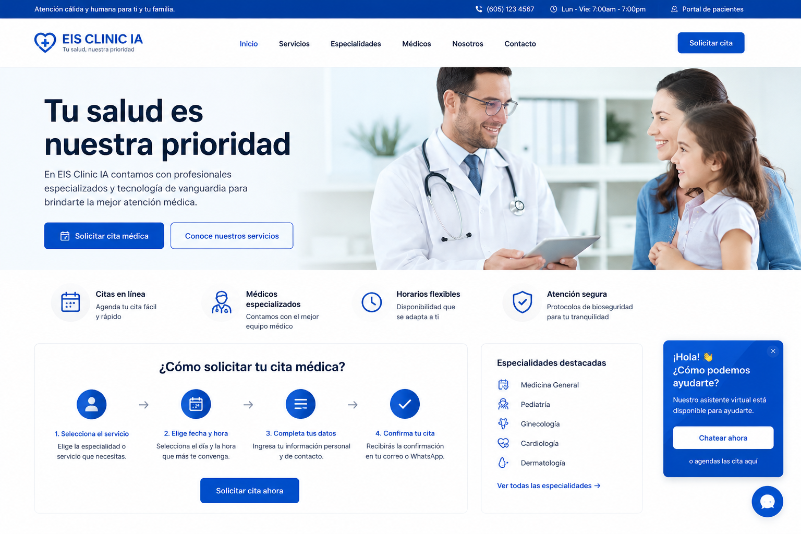

Agendar cita
Encuentra disponibilidad y reserva.
Un portal especializado para gestionar tus citas médicas desde cualquier dispositivo.

Encuentra disponibilidad y reserva.
Revisa tu próxima atención.
Cambia fecha u horario.
Gestiona la cancelación.
La interfaz está preparada para conectarse al motor de citas de EIS Clinic IA mediante n8n y posteriormente con la API autorizada del sistema de historia clínica.
Datos básicos.
Especialidad y profesional.
Disponibilidad.
Recibe tu comprobante.
El mismo motor de citas puede atender por web, WhatsApp y otros canales usando n8n como orquestador.
Los teléfonos, horarios y políticas deben configurarse con la información oficial del hospital.